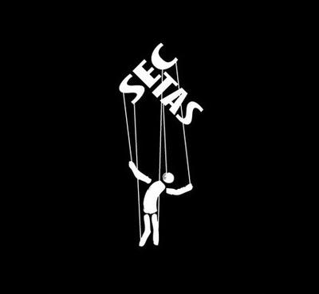

En psicología social, una secta puede definirse como un grupo organizado alrededor de una doctrina rígida, cuya interpretación y autoridad provienen de uno o varios líderes carismáticos situados en la cúspide de una estructura piramidal de poder. Este líder no sólo dicta las normas, sino que produce y controla la ideología del grupo, que luego es transmitida hacia abajo como enseñanza, estatuto, ideario, manifiesto, doctrina, catecismo, guía espiritual, verdad sagrada o nuevo conocimiento revelado. La envoltura cambia, pero el mecanismo es el mismo: una jerarquía vertical, donde la verdad fluye de arriba hacia abajo, sin posibilidad de cuestionamiento.


Con el tiempo todas las sectas —sin importar si su disfraz es religioso, político, esotérico, terapéutico o pseudocientífico— tienden a endurecerse en fanatismos fundamentalistas. Lo que comienza siendo una «comunidad» o un «movimiento espiritual o patriótico», acaba casi siempre convertido en un sistema cerrado, impermeable a la crítica, donde pensar diferente es pecado, traición, o antipatriotismo. Y todas, absolutamente todas, usan técnicas de modificación del pensamiento: desde tácticas de seducción emocional y manipulación afectiva, hasta mecanismos más agresivos de control mental, vigilancia, presión grupal y castigo psicológico.
¿Pero quiénes son los candidatos ideales para caer en una secta? —Pues, aunque podríamos pensar que «sólo las personas ingenuas», la evidencia demuestra que las sectas capturan personas de todo tipo, pero principalmente en momentos de vulnerabilidad. Cualquiera que atraviesa un estado de insatisfacción emocional, económica o social, cae fácilmente si es abordado por la persona idónea. Y los reclutadores —porque sí, los hay— saben muy bien eso. Por eso buscan a individuos que:
-
Están pasando por un cambio vital brusco.
La separación de los padres, el inicio de la universidad, un cambio de ciudad, el divorcio, el fallecimiento de un ser querido, una crisis vocacional, la pérdida del trabajo, el diagnóstico de una enfermedad o la experiencia de la vejez. En momentos de transición la identidad se vuelve más frágil, y esa fragilidad es un imán para los grupos dogmáticos.
-
Tienen heridas emocionales no resueltas.
Soledad, carencias afectivas, desintegración familiar, conflictos sentimentales, ausencia de figura paterna o materna, falta de un sentido de pertenencia. Las sectas te ofrecen «la familia que nunca tuviste»… a cambio de tu libertad.
-
Enfrentan dificultades económicas o materiales.
Las deudas, la pobreza o una pérdida económica significativa, empujan a muchos a buscar «soluciones mágicas», o «el verdadero movimiento reivindicador de la sociedad», «la prosperidad material o espiritual definitivas», «actitudes que atraen abundancia», o cualquier cosa que prometa orden en medio del caos.
-
Están buscando respuestas
Dudas existenciales, crisis de sentido, de falta de identidad individual o nacional, hastío de sus condiciones sociales, aburrimiento, sensación de estancamiento, deseo de un «nuevo comienzo», necesidad de compañía o entretenimiento. Estas personas son terreno fértil para cualquier doctrina que se presente como «el verdadero y único camino», «la respuesta», «la única verdad», «la única solución para el país».
-
Son jóvenes y adolescentes
Este es un punto crucial. Los jóvenes suelen atravesar crisis emocionales, existenciales y hormonales; su personalidad aún se está formando, y su mente es especialmente maleable. Por eso muchas sectas, iglesias, movimientos políticos o esotéricos, y grupos extremistas, apuntan directamente a ellos. Incluso hay sectas que entrenan a ciertos miembros para identificar y reclutar a personas vulnerables, como cazadores detectando sus presas.
Veamos ahora la estrategia: cómo cazan a las víctimas
Los grupos sectarios no reclutan diciendo «somos una secta, ven y te manipulamos». Comienzan con seducción emocional calculada:
-
El bombardeo amoroso
Es una táctica clásica: abrazos, halagos, atención y reconocimiento constante, sonrisas, promesas, mensajes empáticos, y una atmósfera de cariño artificial. El objetivo es que el nuevo miembro se sienta visto, valorado e importante. Y cuando alguien ha sido ignorado, marginado o herido, este bombardeo emocional puede resultar irresistible.
-
Control del entorno social
Una vez dentro, el siguiente paso es aislarte. Tu familia «no te entiende». Tus amigos «viven en el error». La secta, en cambio, es «tu nueva familia», los únicos que «quieren tu bienestar», los únicos que «ven la verdad». Separarte de tus vínculos previos es esencial para instaurar dependencia.
-
Control del tiempo y de la información
Reuniones constantes, actividades obligatorias, lecturas dirigidas, censura de fuentes externas, vigilancia entre miembros. Si controlan lo que ves, lo que oyes y con quién hablas, controlan también lo que piensas.
-
Inducción de culpa y vergüenza
Cuando alguien comienza a dudar, el grupo responde con etiquetas: Es un «pecador», «traidor», «débil», «enemigo», «apátrida», «corrupto», «contaminado por el mundo exterior». La vergüenza es un arma muy poderosa para imponer obediencia.
¿Cuál es la advertencia del psicólogo?
El peligro de las sectas no pertenece exclusivamente al ámbito religioso. Cualquier ideología —política, esotérica, filosófica, terapéutica o incluso pseudocientífica— puede convertirse en una secta si cumple los mismos patrones:
Un líder carismático incuestionable.
Una doctrina, manifiesto o ideario único e indiscutible.
Seguidores dependientes.
Aislamiento social (no es como los demás miembros de la sociedad, es un grupo aparte, diferente, «mejor»).
Control del pensamiento (nadie puede pensar diferente).
Mecanismos de culpa y castigo (quien no está con nosotros está en contra nuestra; es un traidor, un vendepatria, un corrupto, un pecador).
Por eso, el consejo es universal: Desconfía de cualquier grupo que asegure ser «el único camino verdadero». No importa si promete:
La salvación espiritual.
La iluminación.
La prosperidad financiera.
La libertad.
La justicia social perfecta.
La emancipación de los pobres.
El nirvana.
El paraíso.
O el «potencial total del ser humano».
Las afirmaciones absolutistas siempre son una bandera roja. Desconfía del bombardeo amoroso, de quien sin conocerte te trata desde el inicio como «hermano», «compañero», «camarada». Nadie genuinamente amoroso necesita sobreactuar para convencerte.
Desconfía de quien te aleja de tu familia y tus amistades. De quien te dice que tu verdadera familia es «la iglesia», «el partido», «el movimiento político». Que los demás, aunque sean tus parientes, están equivocados, perdidos. El aislamiento es una herramienta de control, nunca de crecimiento.
Desconfía de quien vigila y controla tu tiempo, tus relaciones o tu información. De quien te dice que no leas ni mires esos medios de comunicación «pecadores», «apátridas», «vendidos», «mentirosos». Tú necesitas tener libertad para analizar críticamente toda la información que recibes, independientemente de la fuente. Necesitas analizar el mensaje y no necesariamente al mensajero. Tu libertad no se controla.
En resumen, una secta no es sólo un grupo raro o una religión minoritaria; es un sistema psicológico tóxico diseñado para capturar, retener y moldear mentes vulnerables. Y la mejor defensa ante un movimiento sectario es el escepticismo, la autonomía, el librepensamiento, y la vigilancia crítica. Ningún líder es tan sabio como para merecer tu entrega total e incondicional.
[Godless Freeman]
[Crédito de imagen: El Jaume Parla]
Comentarios
Comments powered by Disqus